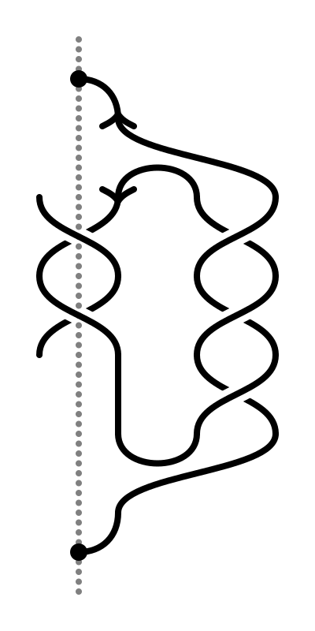

show all invariants|show all metadata
Input data and context

% s.r1.x0.y2.x0.y2.y2.u1
s.r1.x0.y2.x0.y2.y2.u1
,1
% Fixed orientations: s.l1.x0.y2.x0.y2.y2.u1,1
% Simplifies with options '-qs' to r0.y1.r2.x1.x1.x0.x0.x1.x1.l4.y3.x5.l6.y5.y4.y4.y5.y3.y4.y4.y3.u2.y3.y2.y1.u0.u0.x1.x1.x1.x1.x1.x1.x1.x1.x1.x1
Bar-Natan multicurve \(\mathrm{\widetilde{BN}}(T)\)
options -c2-qs
(diagram)
(metadata)
% file 'examples/words/w54e78c8431/cxBNr-c2-qs', generated by kht++ 0.1 on Mon Nov 16 16:46:11 2026 UTC
1) h^-8 q^-23 δ^-7/2 ⬯——D—>⬯~>⬯—>⬯~>⬯—>⬯~>⬯—>⬯~>⬮
2) h^ 1 q^ -6 δ^ -4 ⬮~~S~>⬯—>⬯~>⬯—>⬯~>⬮—>⬮<~⬯<—⬯<~⬯<—⬯<~⬮<—
Khovanov multicurve \(\mathrm{\widetilde{Kh}}(T)\)
options -c2-qs
(diagram)
(metadata)
% file 'examples/words/w54e78c8431/cxKhr-c2-qs', generated by kht++ 0.1 on Mon Nov 16 16:46:11 2026 UTC
1) h^ 0 q^ -7 δ^-7/2 ⬮~~S~>⬯—>⬯~>⬯—>⬯~>⬮—>⬮<~⬯<—⬯<~⬯<—⬯<~⬮<— s4(∞) q^-2 δ_^-4
2) h^ 1 q^ -5 δ^-7/2 ⬮~~S~>⬯—>⬯~>⬯—>⬯~>⬮—>⬮<~⬯<—⬯<~⬯<—⬯<~⬮<— s4(∞) q^0 δ_^-4
3) h^-9 q^-24 δ^ -3 ⬯~~S^2~>⬯—>⬯~>⬯—>⬯~>⬯—>⬯~>⬯—>⬯~>⬮<—⬮<~⬯<—⬯<~⬯<—⬯<~⬯<—⬯<~⬯<— r(8) q^-136/9 δ|^-7/2